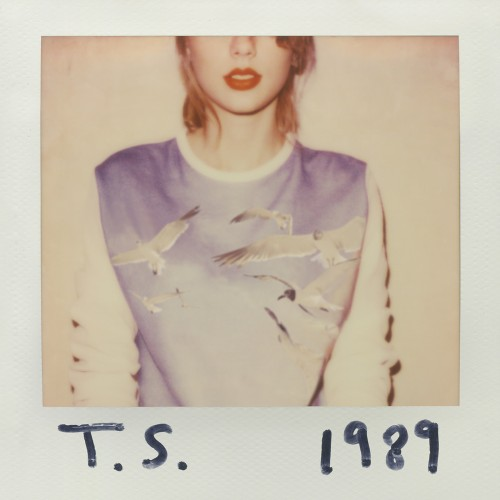

Taylor Alison Swift é...
Uma cantora, compositora, produtora musical, diretora e empresária americana. Conhecida por suas composições narrativas que geralmente concentram-se em sua vida pessoal, ao qual recebem ampla cobertura midiática. Nascida em West Reading, Pensilvânia, Swift mudou-se para Nashville, Tennessee, aos 14 anos, para seguir uma carreira na música country. No mesmo período, ela assinou contrato com a Sony/ATV Music Publishing e em 2005 com a gravadora Big Machine Records, que lançou seus dois primeiros álbuns, o homônimo (2006) e Fearless (2008). Esse último, certificado de diamante nos Estados Unidos, foi o primeiro de todos os seus discos seguintes a alcançar o topo da Billboard 200. Seus lançamentos posteriores, Speak Now (2010), Red (2012), 1989 (2014) e Reputation (2017) venderam — cada um —, mais de um milhão de cópias em suas semanas de estreia em terras estadunidenses, tornando Swift o primeiro artista na história a realizar esse feito. Os três últimos citados recalibraram sua imagem do country para a música pop.
Após assinar com a Republic Records em 2018, ela lançou Lover (2019) e o documentário autobiográfico Miss Americana (2020). Swift explorou estilos folk nos álbuns Folklore e Evermore (ambos de 2020) e gêneros pop moderados em Midnights (2022) e The Tortured Poets Department (2024) — os dois que também debutaram com vendas acima de um milhão de cópias em seu país natal —, enquanto também regravou quatro de seus discos, sob o título (Taylor's Version) após uma disputa sobre a propriedade de suas masters com a Big Machine. Ao longo de sua carreira ela colocou 12 músicas em primeiro lugar na tabela Billboard Hot 100, incluindo "We Are Never Ever Getting Back Together", "Blank Space", "Bad Blood", "Look What You Made Me Do", "Cruel Summer", "All Too Well", "Cardigan" e "Anti-Hero". A Eras Tour (2023–24) e o registro de mesmo nome são, respectivamente, a turnê musical e o filme-concerto com a maior bilheteria de todos os tempos; Swift se tornou a primeira bilionária a ter a música como principal fonte de renda e a artista feminina de maior bilheteria em turnê.
Ao longo de sua carreira, estima-se que Swift tenha vendido cerca de 200 milhões de cópias com seus trabalhos, sendo reconhecida como uma recordista em vendas no mundo. Entre seus diversos prêmios e reconhecimentos encontram-se quatorze Grammy Awards — sendo o único artista a vencer quatro vezes na categoria Álbum do Ano —, um Emmy Award, trinta MTV Video Music Awards (VMA) e 84 recordes mundiais no Guinness World Records. Em publicações da Rolling Stone e The Daily Telegraph, Swift é citada como uma das maiores compositoras de todos os tempos, além de ter sido eleita a quinta maior mulher da história da música pela revista Bustle. Além disso, ela foi homenageada como artista e mulher da década na 47ª edição do American Music Awards, e pela Billboard, respectivamente. Também é tida como um ícone da cultura popular devido à sua influente carreira, filantropia e empoderamento feminino. Em 2024, a Billboard elegeu Swift como a segunda maior estrela pop do período 2000-2024.
Vida Pessoal
Taylor Alison Swift nasceu em 13 de dezembro de 1989, na cidade de Reading, na Pensilvânia. Seu pai, Scott Kingsley Swift, é um consultor financeiro da Merrill Lynch. Scott também nasceu na Pensilvânia e é descendente de três gerações de presidentes de bancos. Sua mãe, Andrea (sobrenome de solteira Finlay), é uma dona de casa que anteriormente trabalhou como executiva de marketing de um fundo de investimento. Andrea passou dez anos de sua vida em Singapura, antes de se mudar para o Texas; seu pai era engenheiro de plataforma de petróleo que trabalhou entre o território do Sudeste Asiático. Swift recebeu o nome de gênero neutro "Taylor" porque sua mãe acreditava que este iria ajudar a formar uma carreira empresarial de sucesso. A cantora possui um irmão mais novo, Austin, que foi estudante da Universidade de Notre Dame. Taylor passou seus primeiros anos de vida em uma fazenda aonde eram cultivados pinheiros de Natal, no Condado de Montgomery, também na Pensilvânia. Estudou a pré-escola e seu jardim de infância na Alvernia Montessori School, dirigida por freiras franciscanas, sendo mais tarde educada no colégio Wyndcroft, uma instituição particular para ambos os sexos em Pottstown. Quando a artista tinha nove anos, sua família se mudou para Wyomissing, aonde foi aluna do West Reading Elementary Center e da Wyomissing Area Junior/Senior High School. Ela passava o verão na casa de férias de praia de seus pais em Stone Harbor, Nova Jersey, e descreveu-o como o lugar onde a maioria das suas memórias de infância foram formadas.
A família da artista possuía vários cavalos quarto de milha e um pônei nascido em Shetland. O primeiro hobby da cantora foi hipismo inglês. Sua mãe a colocou em uma sela pela primeira vez quando ainda tinha nove meses de idade, e mais tarde ela competiu em rodeios. Quanto tinha nove anos, Swift se interessou por teatro musical. Ela se apresentou em várias produções da Berks Youth Theatre Academy e viajou regularmente para a Broadway para aulas de canto e atuação. Ela então voltou sua atenção para a música country; as obras musicais de Shania Twain a fizeram "simplesmente querer correr em uma quadra quatro vezes e ter fantasias com tudo". Seus finais de semana eram gastos se apresentando em festivais locais, feiras, cafeterias, concursos de caraoque, clubes de jardim, encontros de escoteiros e eventos esportivos. Aos onze anos, após várias tentativas falhadas, Swift venceu uma competição musical após interpretar "Big Deal" de LeAnn Rimes, tornando-se assim o ato de abertura para um concerto de Charlie Daniels em um anfiteatro de Strausstown. Esta ambição crescente começou a isolar a jovem de seus colegas do ensino médio.
Após assistir a um episódio de Behind the Music sobre Faith Hill, a cantora sentia-se segura de que precisava ir para Nashville, Tennessee para buscar sua carreira musical. Ainda em seus onze anos de vida, ela e sua mãe viajaram para Nashville para as férias de primavera e deixar fitas demo de interpretações de canções de Dolly Parton e Dixie Chicks para gravadoras musicais de Music Row. Várias gravadoras a rejeitaram, e ela percebeu que "todos em sua cidade queriam fazer o que eu queria fazer. Então, eu fiquei pensando a mim mesma, eu preciso achar um jeito de ser diferente". Um ano depois, um técnico em informática a ensinou como tocar três acordes em um violão, inspirando-a a escrever sua primeira canção, Lucky You. Ela anteriormente tinha ganhado um concurso nacional de poemas com Monster in My Closet, mas focou sua atenção em compor músicas. Em 2003, Taylor e seus pais começaram a negociar com Dan Dymtrow, gerente musical de Nova York. Com a ajuda dele, a jovem se tornou garota-propaganda da Abercrombie & Fitch como parte da campanha Rising Stars, teve uma música incluída na compilação da Maybelline e participou de reuniões com as principais gravadoras estadunidenses. Após interpretar canções próprias em um showcase da RCA Records, a aluna da oitava série recebeu um contrato de artista em desenvolvimento e fez frequentes viagens para Nashville com sua mãe.
Quando tinha quatorze anos, o pai da musicista foi transferido para o escritório da Merrill Lynch no Tennessee, e a família se realocou em uma casa à beira de um lago em Hendersonville. Ela descreveu o momento como "um incrível sacrifício" que sua família tinha que fazer. "Meus pais notaram que eu estava obcecada, que eu não iria deixar isso de lado, que não era só uma fase". No estado, ela foi educada na Hendersonville High School durante seu ano de caloura e o segundo ano. Mais tarde, para encaixar os estudos com sua agenda de concertos, ela transferiu-se para a Aaron Academy, uma escola cristã particular que oferecia serviços de homeschooling. Ela recebeu seu diploma do ensino médio em 2008, completando seus dois últimos anos de estudos em apenas doze meses.

Taylor Swift (2006)
O álbum Taylor Swift é o álbum de estreia da cantora Taylor Swift. Com uma forte influência do country, o disco apresenta letras sinceras sobre amor, relacionamentos e experiências adolescentes. Destaque para os singles "Tim McGraw" e "Teardrops on My Guitar", que ajudaram a lançar Swift ao sucesso. O álbum recebeu aclamação por sua autenticidade e habilidade de composição, estabelecendo a jovem cantora como uma promessa da música country-pop.
.
Fearless (2008)
Fearless é o segundo álbum de estúdio de Taylor Swift e consolidou seu sucesso, misturando country e pop com letras que exploram o amor jovem, relacionamentos e crescimento pessoal. O álbum inclui hits como "Love Story" e "You Belong with Me", que ganharam destaque nas paradas e ampliaram seu público. *Fearless* recebeu aclamação da crítica, foi um enorme sucesso comercial e venceu o Grammy de Álbum do Ano, fazendo de Taylor Swift a artista mais jovem a receber essa honra na época.
.

Speak Now (2010)
Speak Now é o terceiro álbum de estúdio de Taylor Swift, marcado por uma maior maturidade nas letras e pela transição do country para o pop-rock. Swift escreveu todas as músicas sozinha, abordando temas de amor, arrependimentos e autodescoberta, com canções como "Mine", "Back to December" e "Dear John". O álbum foi bem recebido pela crítica e pelos fãs, elogiado por sua composição confessional e emotiva. Speak Now consolidou ainda mais Swift como uma das principais artistas da sua geração, mostrando sua evolução artística e musical.
.

Red (2012)
Red é o quarto álbum de estúdio de Taylor Swift e marca uma transição mais clara do country para o pop, explorando uma variedade maior de estilos musicais. O álbum aborda temas de amor, desgosto e amadurecimento, com faixas que vão de baladas emotivas a canções pop energéticas. Inclui sucessos como "We Are Never Ever Getting Back Together", "I Knew You Were Trouble" e "22". Red foi elogiado pela ousadia musical de Swift, sendo considerado um de seus álbuns mais ambiciosos até então, e solidificou seu papel como uma força inovadora na música popular.
.
1989 (2014)
1989 é o quinto álbum de estúdio de Taylor Swift e marca sua total transição para o pop. Inspirado pelos sons dos anos 1980, o álbum apresenta uma produção polida e eletrônica, com batidas sintetizadas e influências de new wave. Com hits como "Shake It Off", "Blank Space" e "Style", 1989 foi um sucesso comercial massivo e recebeu aclamação da crítica pela reinvenção de Swift como uma pop star. O álbum ganhou o Grammy de Álbum do Ano, tornando Swift a primeira mulher a ganhar o prêmio duas vezes nessa categoria como artista principal.
.

Reputation (2017)
Reputation é o sexto álbum de estúdio de Taylor Swift e representa uma mudança drástica em sua imagem e som. Com uma produção mais sombria e influências de electropop e hip hop, o álbum explora temas de fama, vingança e romance, refletindo o intenso escrutínio da mídia que Swift enfrentava na época. Faixas como "Look What You Made Me Do", "...Ready for It?" e "Delicate" destacam a nova direção artística da cantora. Reputation foi um sucesso comercial, embora tenha dividido opiniões inicialmente, mas é reconhecido por sua coesão temática e pelo retrato de uma Swift mais ousada e introspectiva.
.

Lover (2019)
Lover é o sétimo álbum de estúdio de Taylor Swift e marca um retorno a um tom mais leve e otimista, contrastando com o som mais sombrio de Reputation. O álbum mistura pop com elementos de synth-pop e indie pop, abordando temas como amor, aceitação e reflexão pessoal. Com hits como "ME!", "You Need to Calm Down" e a faixa-título "Lover", o álbum foi aclamado por sua diversidade musical e letras sinceras. Lover celebra a liberdade criativa de Swift e a fase mais alegre de sua carreira, sendo um sucesso de crítica e público.
.

folklore (2020)
Folklore é o oitavo álbum de estúdio de Taylor Swift e marca uma mudança significativa em sua sonoridade, mergulhando no folk, indie e alternativo. Com uma produção minimalista e introspectiva, o álbum apresenta narrativas fictícias e pessoais, explorando temas de isolamento, memórias e desejos não realizados. Destacam-se faixas como "Cardigan", "Exile" (com Bon Iver) e "The 1". Folklore foi amplamente elogiado pela crítica, sendo considerado um dos trabalhos mais maduros de Swift. O álbum foi um sucesso comercial e venceu o Grammy de Álbum do Ano, reforçando sua versatilidade artística.
.

evermore (2020)
Evermore é o nono álbum de estúdio de Taylor Swift, lançado como um "álbum irmão" de Folklore. Ele continua o estilo folk, indie e alternativo, com letras poéticas e narrativas envolventes. O álbum explora temas de amadurecimento, saudade e novas perspectivas sobre o amor, com destaques como "Willow", "Champagne Problems" e "No Body, No Crime" (com Haim). Evermore foi elogiado pela profundidade lírica e produção refinada, consolidando o período criativo experimental de Swift. O álbum foi bem recebido por críticos e fãs, reforçando seu sucesso com essa nova estética musical.
.

Midnights (2022)
Midnights é o décimo álbum de estúdio de Taylor Swift, voltando ao pop após suas incursões pelo folk em Folklore e Evermore. Com uma sonoridade mais eletrônica e introspectiva, o álbum explora temas de insônia, ansiedade, autorreflexão e relacionamentos complexos. Destaques incluem "Anti-Hero", "Lavender Haze" e "Midnight Rain". Midnights foi elogiado pela crítica por sua coesão temática e produção sofisticada, sendo visto como uma reflexão madura sobre momentos pessoais de Swift. O álbum foi um sucesso comercial, reafirmando sua capacidade de inovar e se conectar com seu público.
.
THE TORTURED POETS DEPARTMENT (2024)
“The Tortured Poets Department” é o 11º álbum de estúdio de Taylor Swift, lançado em 19 de abril de 2024. Este álbum duplo, com 31 faixas, inclui colaborações com artistas como Post Malone e Florence and the Machine. As canções exploram temas de amor perdido, desilusão e os desafios da fama, com letras que refletem as experiências pessoais de Swift. O álbum foi bem recebido pela crítica, sendo descrito como uma obra sofisticada e pessoal, consolidando ainda mais a posição de Swift como uma das principais artistas de sua geração.